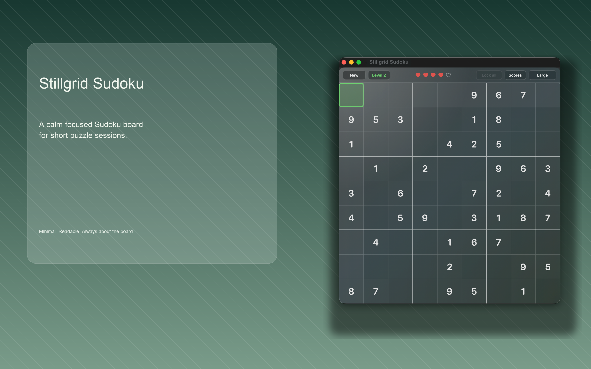
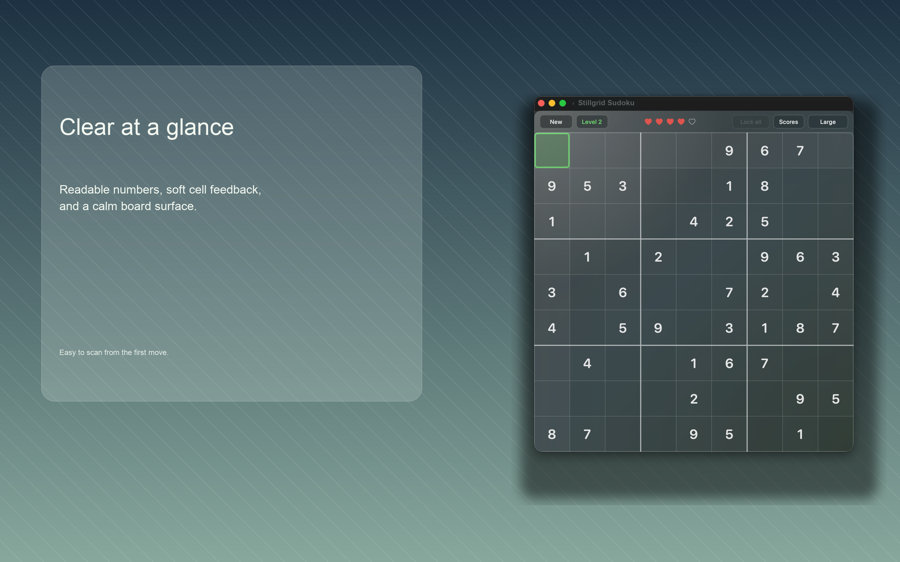
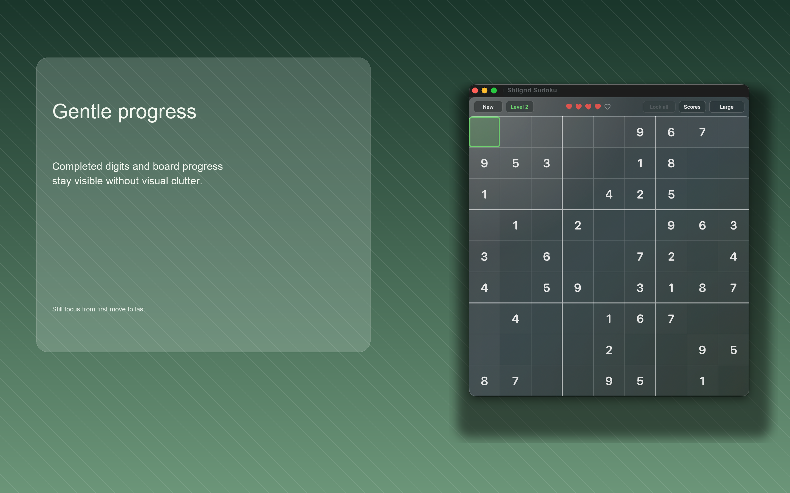

macOS Sudoku
Stillgrid Sudoku
A calm, readable Sudoku board for short puzzle sessions and quiet focus.
Built around the board, Stillgrid Sudoku keeps controls compact, numbers clear, and progress feedback gentle. No accounts, ads, analytics, tracking, third-party SDKs, or cloud services.
Screenshots
Readable from the first move



Privacy
Local by design
Game progress, settings, and high scores stay on your Mac. Stillgrid Sudoku does not require network access for gameplay.
Read the privacy policy